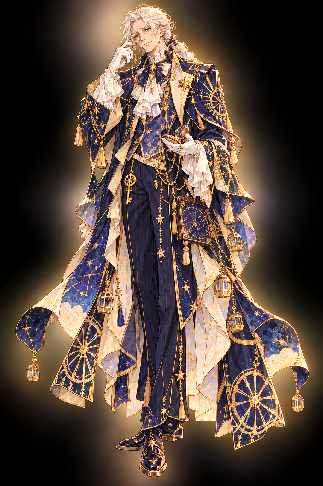
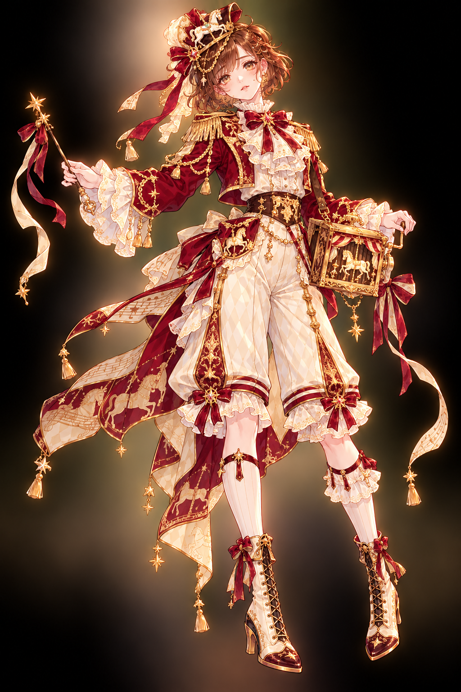
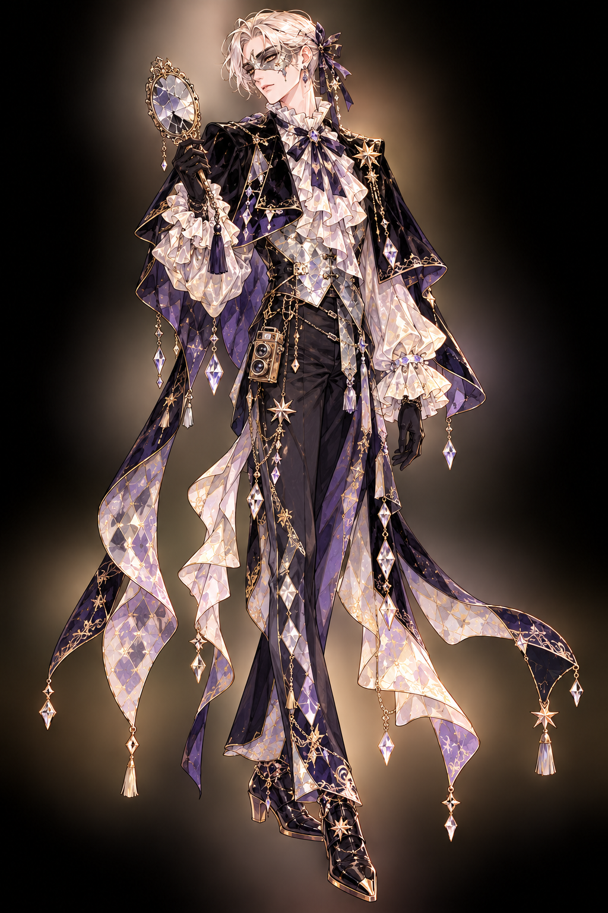
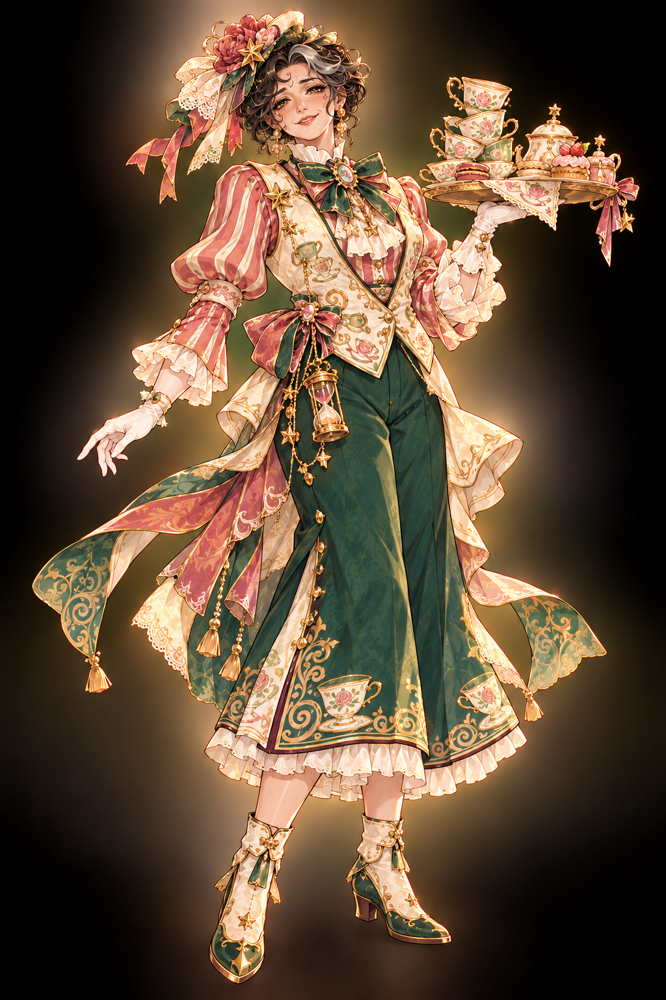

휠 3 · 로라 1 · 바니쉬 2 · 낸시 2

폐장 직전 마지막 관람차에 탔다가 구동 장치 고장으로 정상에서 멈췄다. 구조를 기다리던 중 곤돌라 고정부가 파손돼 추락하여 사망했다.
키퍼는 ‘마지막 손님이 내리면 퇴근할 수 있다’며 관람차 안내를 맡겼다. 그러나 휠이 인원을 셀 때마다 빈 곤돌라 안에 한 사람이 더 잡힌다. 그 한 사람이 자기 자신이라는 사실을 외면한다.
“마지막 바퀴입니다. …분명 아까도 그렇게 말씀드렸는데.”

동생과 회전목마에 탔다가 장식 천장이 무너졌다. 동생을 출입문 쪽으로 밀어 구하고 대신 잔해에 맞아 사망했다.
키퍼는 동생을 다시 만날 수 있다고 말하며 로라를 붙잡았다. 동생은 구조되어 공원 밖으로 나갔지만 로라는 그 사실을 모른 채 작은 목마 한 자리를 비워 둔다.
“그 말은 내 동생 자리예요. 내가 밀어 줬으니까… 밖으로 갔겠죠?”

거울 미로에서 정전과 전기 화재가 발생했다. 비상구의 반사상을 실제 문으로 착각해 같은 회랑을 돌다가 연기를 빠져나오지 못하고 사망했다.
키퍼는 ‘아직 사진 속에 네 출구가 남아 있다’고 속삭이며 안내인 자리를 주었다. 바니쉬는 손님의 출구는 찾을 수 있지만 자신이 찍힌 사진 속 문으로는 통과하지 못한다.
“빛나는 쪽이 출구라는 보장은 없죠. 이번에는 손에 닿는 문을 고릅시다.”

아이와 찻잔 기구에 탑승했다가 제동 장치 고장과 기구 분리 사고를 당했다. 아이는 먼저 구조됐지만 낸시는 구조대가 도착하기 전에 사망했다.
낸시는 아이가 아직 공원에 있다고 믿고 작은 손님을 찾는다. 키퍼는 이미 아이가 구조되어 나갔다는 기록을 숨기고, 다음 운행에서 만날 수 있다며 낸시를 찻잔 캐스트로 붙잡았다.
“작은 아이 한 명을 찾고 있어요. 제 손을 잡고 있었는데… 다음 잔에는 없더군요.”